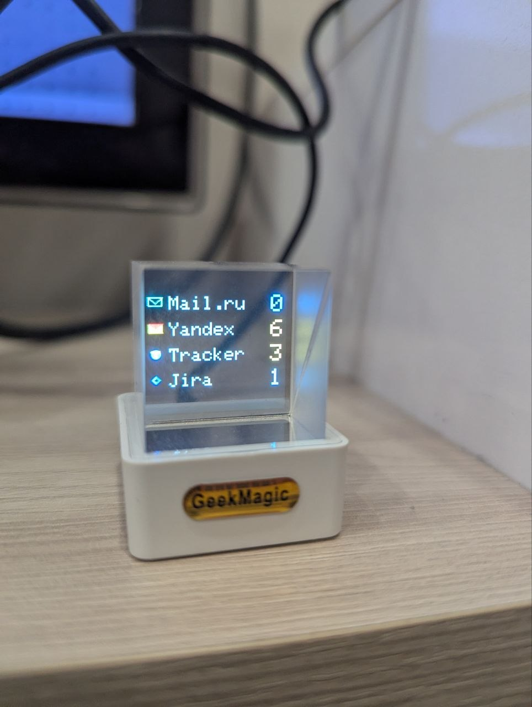

Magic Qube
Железный пет-проект из домашней лаборатории: Node.js-сервис на Raspberry Pi опрашивает почтовые ящики и таск-трекеры по IMAP, хранит состояние в MongoDB и в реальном времени выводит счетчики писем и задач на физический ESP-дашборд.

Возможности
- Интеграции: Yandex/Mail.ru (непрочитанные), Yandex Tracker и GitLab (задачи из писем)
- Устойчивый планировщик опроса с контролем параллелизма
- Full- и delta-рендеринг экрана на ESP-устройстве
- Шифрование учетных данных в базе, API с ключом доступа
- Автовосстановление после перезагрузки, деплой через Docker/systemd